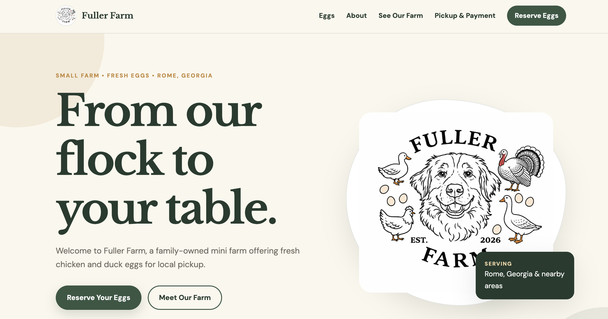
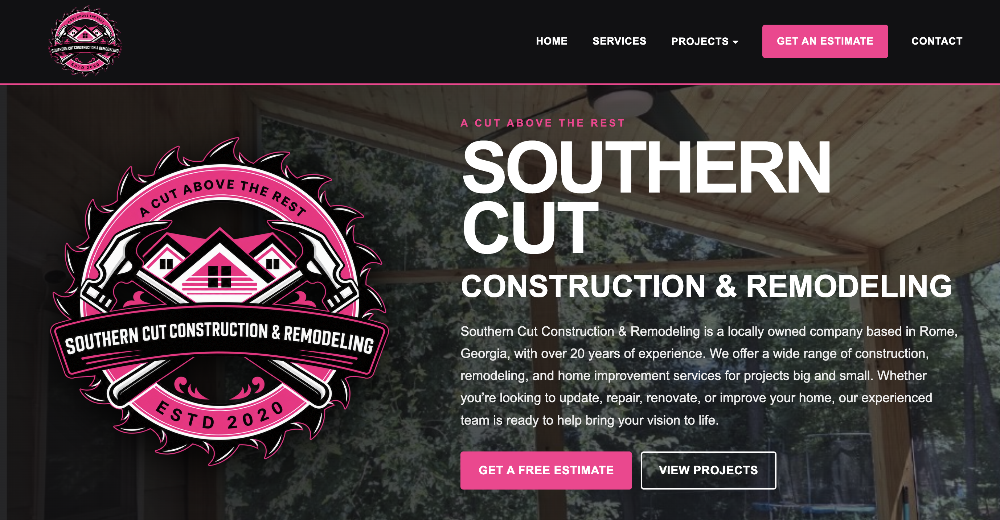

MY PORTFOLIO
Every business has its own personality, story, and goals. I love creating websites that reflect that. Take a look at some of the businesses I've had the pleasure of working with — and while you're there, show them some love!

FARM & SMALL BUSINESS
Fuller Farm is a small family-run mini farm offering fresh eggs to the local community. I created a warm, welcoming website that gives customers an easy place to learn about the farm, view egg information, and reserve eggs for pickup.
Website Design • Mobile-Friendly Layout • Egg Reservation Form • Business Information
Visit Fuller Farm →
CONSTRUCTION & REMODELING
Southern Cut Construction & Remodeling needed a professional online presence where potential customers could learn more about the company and the work they provide. I created a website that showcases their services and projects while making it simple for customers to get in touch.
Website Design • Service Pages • Project Showcase • Contact Form • Mobile-Friendly Layout
Visit Southern Cut →YOUR BUSINESS COULD BE NEXT
Let's bring your vision to life.
Tell me a little about your business and what you're looking for. We'll figure out the rest together.
Get Started →